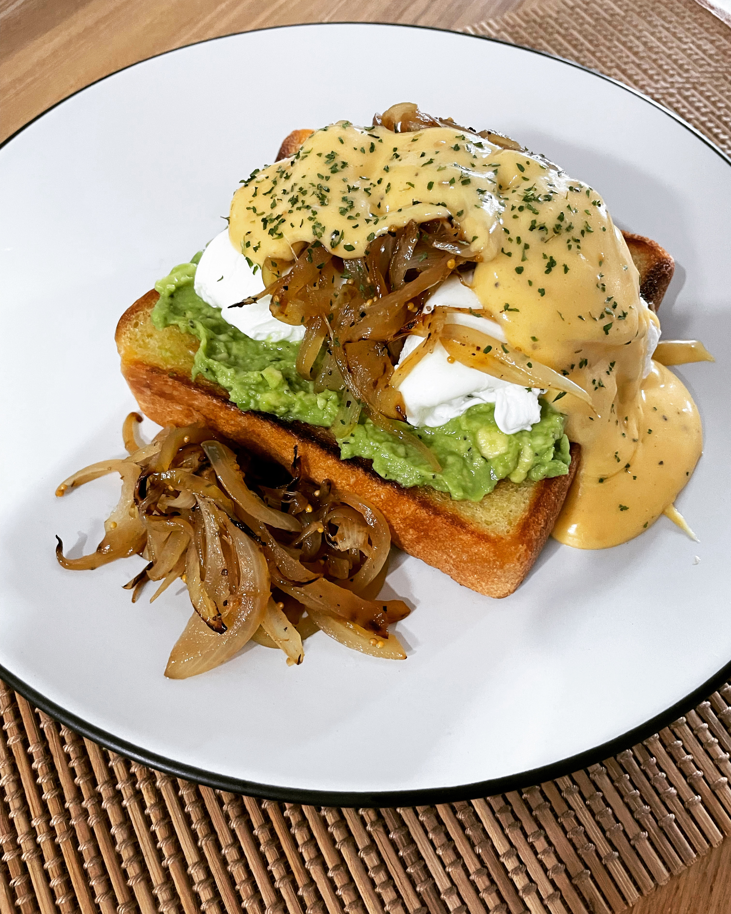

Recipes
- Bibimbap: Rice with mixed veggies and meat, served on a sizzling stone bowl with crispy sesame oil-fried rice and a
selection of Banchan 반찬 (Banchan) -this is the ultimate
Korean comfort food.
- Bulgogi Sandwich: Inspired by the famous Bibimbap, a delicious sweet soy sauce beef sandwich.
- Mayak Gyeran: Sweet, sour and spicy marinated eggs. Their incomparable flavor is has earned them the
nickname drug eggs.
